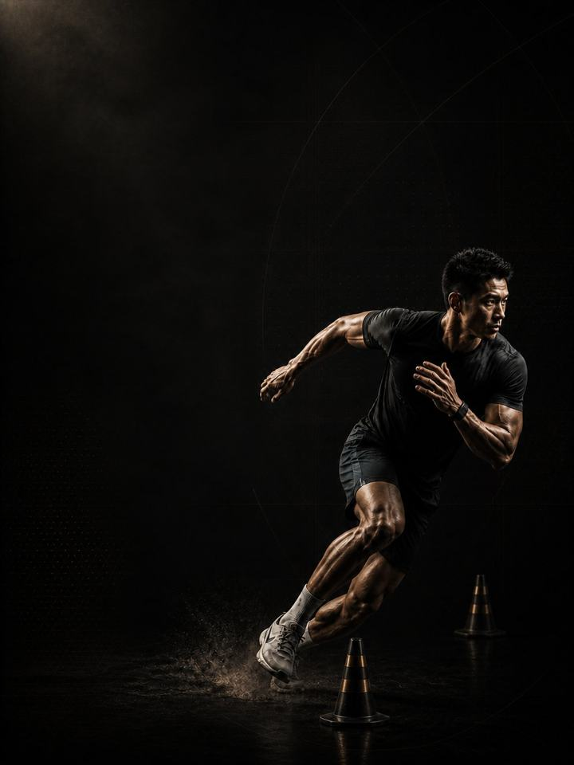

Multidirectional · Base
Build the strength and tissue capacity that a field or court season is about to spend.
- Built forfootball, basketball and handball players
- Training days3 gym days a week around your sport, or 2 in season
- Session length48–60 minutes
- Equipmentfull gym, plus a med ball, sled and cones if available
- Formatmobile PDF, every exercise linked to a demo video
- Get all four blocks of this sport family for 119.990 KD (159.960 KD if bought separately).
- Upgrade to 1:1 coaching within 30 days and this price comes off your first month.
The store opens soon. For now, Buy opens an Instagram message and you receive the PDF there.
Who it's for
Football, basketball and handball players who want to stay available for the whole season. Field and court players get injured for a plain reason: the sport is their only training. Two games a week and nothing else means every sprint, jump and cut lands on tissue that was never prepared for it. The cost usually shows up in the hamstring, the groin or the ankle, in the second half of the season.
This block is the deposit before that withdrawal. It is the heaviest and least glamorous twelve weeks of the year: two-legged strength, controlled landings, and the tissues behind most amateur injuries trained every week. Nothing here is sport-specific yet, and that is the point. You cannot cut sharply on a leg that cannot hold you.
Where it sits in the year: Block 1 of 4 in the Multidirectional family. Base, Build, Compete, Restore, in that order. Run it in your off-season or the quietest stretch of your calendar, because this block needs the least interference from matches.
Your week
Three non-consecutive gym days in the off-season. In season, Days 1 and 2 only.
| Sun | Mon | Tue | Wed | Thu | Fri | Sat | |
|---|---|---|---|---|---|---|---|
| Off-season, 3 days | Day 1 | Sport | Day 2 | Sport | Day 3 | Rest | Rest |
| In-season, 2 days | Day 1 | Sport | Day 2 | Rest | Sport | Match | Rest |
The tables in the PDF are written for the 3-day version. In season, never train within 24 hours of a match, and keep the Nordic and Copenhagen work every week regardless.
Every session runs the same way:
- Warm-up, 8–10 min. The same sequence every session. Glutes, hips and shoulders switched on before anything fast happens.
- Speed and power, 12–15 min. Jumps and throws, with full recovery between sets. The set stops the moment quality drops.
- Strength, 20–25 min. The heavy compound lifts, with two to three minutes between sets. This is force, not conditioning.
- Tissue work, 8–10 min. Nordics, Copenhagens, calves and carries. Last, and never cut.
The order matters. Power comes before fatigue, because power trained tired is conditioning with extra risk. Tissue work comes last so that it survives a rushed session instead of being cut from the middle of one.
How the 12 weeks progress
Athletic qualities are built in an order. Strength underpins power, power underpins speed, and all three sit on tissue that can tolerate the load. The load climbs through all twelve weeks. The jumps change every four.
| Weeks 1–4 | Weeks 5–8 | Weeks 9–12 | |
|---|---|---|---|
| Phase | Structural capacity | Eccentric and landing | Elastic and speed |
| Goal | Build maximal strength and connective tissue capacity | Build single-leg eccentric strength and landing control | Turn strength into reactive strength and sprint speed |
| Jumps | Two-legged and landing-focused | Single-leg landings, side-to-side gap targeted | Shorter contacts, lighter sled, still no cutting |
| Working sets a week | 65 | 69 | 76 |
| Average effort | RPE 7.0, about 3 reps in reserve | RPE 7.6, about 2.4 in reserve | RPE 7.7, about 2.3 in reserve |
| Landings a week | 44 | 115 | 67 |
| Throws a week | 20 | 50 | 0 |
RPE is effort rated from 1 to 10. RPE 7 means about 3 reps left in the tank. Working sets exclude the warm-up.
Deload weeks: weeks 6 and 12 are lighter. Halve the sets, drop the jump volume, keep the loads, then retest fresh.
The rules that make it work
- Strength is the whole point of this block. Load climbs for all twelve weeks. Finishing the block lifting what you started with means the block failed, however the jumps felt.
- Land before you leap. Step down from every box and stick every landing for two seconds. The absorption is the training effect, and skipping it is how jump training becomes an injury.
- Nordics and Copenhagens are not optional. They run every week of every block. Programs that include them show the largest reductions in hamstring and groin injury of anything tested. The trials measured whole programs, so they are the core of the insurance, not all of it.
- Close the gap, don't just add load. Start every single-leg set on the weaker side and match the strong side to it. A 10% hop gap is what this block exists to fix.
- A jump number is the cheapest fatigue test there is. Three standing broad jumps at the start of every Day 1, keeping the best. More than 10% below your own rolling average means reduce that day: drop the power work and one set from each lift. It takes ninety seconds.
- Count landings, not just sets. Every jump, hop, bound and drop is a landing your tendons pay for, warm-up hops included. Throws, sprints and split steps are not. Keep the week under about 120 landings in Base. Sport practice counts on top.
Terms
- Block: 12 weeks. This program. One block develops one set of qualities to a set standard.
- Phase (mesocycle): 4 weeks. Each one targets one quality. Four weeks is a choice, not a rule. The length follows the goal.
- Training week (microcycle): where effort climbs, sets are added and the deload lands.
- Training year (macrocycle): four blocks in order (Base, Build, Compete, Restore), about 48 weeks.
What the block trains
-
Strength is the base. You cannot express power you do not have. Every jump, sprint and cut is force applied quickly, and the force comes first. That is why the heaviest lifting of the year sits here. In the program: Front Squat, RDL, Bench Press
-
Landing before leaping. Jump training is landing training. The lowering half is where tissue adapts and where injuries happen, so this block teaches absorption first. In the program: Box Jump, Broad Jump to Stick, Bounds
-
The four usual suspects. Hamstring, groin, calf and shoulder account for most amateur injuries in field and court sport. They are trained every week, whether or not they hurt. In the program: every Day 1, all twelve weeks
-
Single-leg is the real sport. You almost never play on two legs. Split squats, single-leg hops and carries expose the side-to-side gaps that a barbell hides. In the program: Split Squat, Single-Leg Hop, Suitcase Carry
-
Build it before you need it. Arrive at pre-season already strong and the sport sharpens you. Arrive unprepared and the first six weeks of matches become your training block.
How you'll measure progress
You retest in the deload weeks, 6 and 12, so the numbers are taken fresh. The weekly broad jump tracks fatigue in between.
What good progress looks like
- Weeks 1–4: strength climbs quickly and the tissue work starts to bite. Expect real hamstring soreness early.
- Weeks 5–8: landings get quieter, the hop gap narrows, and the Copenhagen numbers move fast.
- Weeks 9–12: the first fast work feels easy on legs that can now hold you.
Block done when: you are stronger than you have ever been, your landings are quiet, and the hop gap between legs is under 10%. The best result is not the biggest jump. It is a left and right side that match.
Respect the week
Count everything: matches, sport training, gym and sleep. Sudden jumps in weekly workload are the most reliable predictor of injury in amateur sport. In a heavy sport week, drop a gym session or cut the power work, but never cut both the sport and the recovery. Protect 7–9 hours of sleep. It is the most powerful performance tool available, and the cheapest.
The science
Every program in the library is built on published research, and how strong that research is gets stated, not implied. Where the evidence is limited, the page says so.
| Finding | Source | What it does not show |
|---|---|---|
| Strength training cuts sports injuries to under a third of the control rate. Stretching does not reduce them. | Lauersen, Bertelsen & Andersen, British Journal of Sports Medicine 2014. Meta-analysis of 25 RCTs, 26,610 participants. PMID 24100287 | Risk ratio 0.32 for strength training and 0.96 for stretching. The trials varied a lot, and dose was not standardised. |
| Programs that include the Nordic hamstring exercise roughly halve hamstring injuries. | van Dyk, Behan & Whiteley, British Journal of Sports Medicine 2019. Meta-analysis, 15 studies, 8,459 athletes. PMID 30808663 | Risk ratio 0.49, or 0.55 with the high-risk-of-bias studies removed. It measures programs that include the exercise, not the exercise alone. |
| One adductor exercise, three times a week in pre-season and once a week in season, cut reported groin problems by 41%. | Harøy et al., British Journal of Sports Medicine 2019. Cluster-randomised trial, 35 teams, 652 male footballers. PMID 29891614 | Odds ratio 0.59. Self-reported, semi-professional men's football only. Not yet repeated in women or other sports. |
| Every sensible prescription beats not training. Heavier loads rank highest for strength. Multiple sets rank highest for muscle size. | Currier, McLeod, Banfield et al., British Journal of Sports Medicine 2023. Network meta-analysis, 178 strength and 119 hypertrophy studies. PMID 37414459 | The differences between prescriptions were small, and all of them worked. |
What's next
After 12 weeks:
- Next block: Multidirectional · Build
- One area needs work: the Corrective series
Want it built around you? One-to-one coaching through the Trainerize app: programming shaped by your goal, schedule and history, video review of your technique, and weekly adjustments. Seats are limited. DM @a_bouzubar with "COACHING".
Before you buy: get cleared first if
- You have chest pain, unusual breathlessness, palpitations or dizziness with exertion.
- You have uncontrolled high blood pressure, a known heart condition, or recent surgery.
- You are pregnant or recently post-partum. Get clearance and a tailored program first.
- You have sharp joint pain in one spot that won't settle. Start with the matching AXIS corrective program.
This program is general fitness guidance. It does not replace a medical assessment.
- Get all four blocks of this sport family for 119.990 KD (159.960 KD if bought separately).
- Upgrade to 1:1 coaching within 30 days and this price comes off your first month.
The store opens soon. For now, Buy opens an Instagram message and you receive the PDF there.